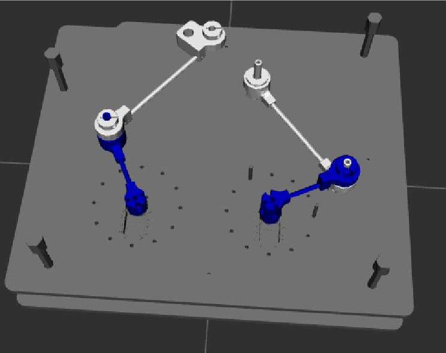
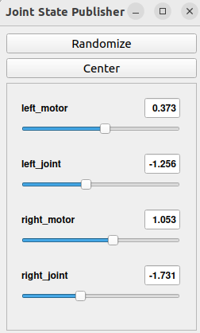

Visualisation RViz
On a créé un programme, qui permet de visualiser notre fichier URDF, dans RViz. Cependant, nous ne sommes pas parvenus à relier les bras 2 et 3 entre eux.
{kind=link}

De plus on utilise l’outil joint_state_publisher_gui afin de pouvoir commander nos 4 liaisons à la souris.
{kind=link}

Voici le programme launch :
import os
from ament_index_python.packages import get_package_share_directory
from launch import LaunchDescription
from launch_ros.actions import Node
from launch.substitutions import Command
def generate_launch_description():
# Chemin vers le fichier URDF
pkg_name = 'mon_robot_description'
file_name = 'robot.xacro'
pkg_share = get_package_share_directory(pkg_name)
urdf_file = os.path.join(pkg_share, 'urdf', file_name)
#utilise pour comprendre le fichier xacro
robot_desc = Command(['xacro ', urdf_file])
return LaunchDescription([
# Noeud qui publie l'état du robot
Node(
package='robot_state_publisher',
executable='robot_state_publisher',
name='robot_state_publisher',
output='screen',
parameters=[{'robot_description': robot_desc}],
),
# Fenêtre pour bouger les joints manuellement
Node(
package='joint_state_publisher_gui',
executable='joint_state_publisher_gui',
name='joint_state_publisher_gui',
output='screen',
),
# Noeud Rviz2 pour la visualisation
Node(
package='rviz2',
executable='rviz2',
name='rviz2',
output='screen',
),
])